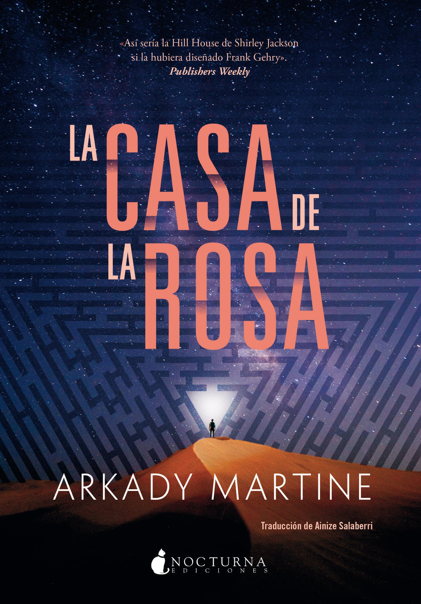

Una memoria llamada imperio

- cadena de memoria y un nuevo huésped✎ Tu notaSi debe ser una yuxtaposición a nosotros como una capa de datos bidireccional
- un imago: como un repositorio de habilidades instintivas y automáticas que a ella no le había dado tiempo de adquirir.✎ Tu notaUn junior puede ser entrenado para curar memorias
- ★ Una mente es una suerte de mapa estelar al revés: un compendio de memoria, respuestas condicionadas y acciones del pasado unidas en una red de electricidad y señales endocrinas, fundidas en un único punto de consciencia en movimiento. Dos mentes juntas contienen cada una un vasto mapa del pasado y del presente, un mapa más vasto y proyectado de los futuros
- Compartir una habilidad con un imago era como descubrir un talento enorme e inesperado
- solo notando cómo se desplegaba en su interior, similar a la manera en que se abría una flor.
- La poesía es para los desesperados y para las personas que han envejecido lo suficiente para tener algo que decir».✎ Tu notaEscribir poesía como forma de aprendizaje
- No subrayas la intriga palaciega sino la tecnología del imago, y la lees como un manual de equipos humanos e IA: memoria que se transmite y se cura, habilidades que se comparten y una mente que proyecta futuros. La poesía cierra el círculo como forma de aprender.
- 2019 original: A Memory Called Empire (Tor, 2019)
- 🏆 Hugo 2020 mejor novela
- 2024 Nocturna, trad. Ismael Attrache · papel 19,90 €
- eBook ✓ Apple Books España, 9,99 € (sept. 2024)
- 4,10 ★ Goodreads (≈78.500), serie Teixcalaan
 Una desolación llamada paz ⏳ La esperas · ficha en tu webA Desolation Called Peace · 2021 · Teixcalaan 2 · Hugo 2022 · Nocturna · en preparación
Una desolación llamada paz ⏳ La esperas · ficha en tu webA Desolation Called Peace · 2021 · Teixcalaan 2 · Hugo 2022 · Nocturna · en preparaciónCierre de la bilogía: Mahit y Tres Hojas de Helecho Marino ante una especie alienígena que nadie entiende; primer contacto y lenguaje.
Mis libros · Una desolación llamada paz
La casa de la rosa Sin leer · encaja con tu interés en IARose/House · 2023 · novela corta · Nocturna, 2026 · 128 págs. · 15 €Misterio de habitación cerrada en una casa que ES una inteligencia artificial: IA y arquitectura.
tienda.nocturnaediciones.com · La casa de la rosa- Bilogía Teixcalaan (serie) ✓ Libro 1 leído en 2024A Memory Called Empire (2019) · A Desolation Called Peace (2021) · Libro 1 en Nocturna (2024)
Ficha de la serie con valoraciones: 4,10 y 4,29 en Goodreads.
goodreads.com · Teixcalaan - Bibliografía completa (ISFDB) Para explorarRelatos y ensayos · Mayoría sin traducir
Relatos y no ficción de la autora, la mayoría solo en inglés.
isfdb.org · Arkady Martine
- Una tecnología de la herencia. Leídos en orden, tus subrayados cuentan cómo funciona el imago. Es una cadena de memoria que pasa de un portador a otro (nº 1). Hace de repositorio de lo que la nueva portadora no tuvo tiempo de aprender (nº 2). Une dos mapas del pasado que proyectan juntos «futuros» (nº 3). Y entrega talentos que florecen dentro sin esfuerzo consciente (nº 4–5). La poesía (nº 6) es la otra memoria de Teixcalaan: la cultura como herencia, y quien domina la palabra domina el imperio.
- IA como capa de datos bidireccional: tu nota al nº 1 convierte el imago en una IA acoplada a la persona. No es una herramienta externa: es un copiloto que hereda, aprende y modifica a quien lo lleva. La pregunta de fondo es de quién es la identidad resultante.
- Mentoría de juniors: tu nota al nº 2 entiende la memoria institucional como algo que hay que curar, no solo transferir. Es lo que Lsel hace con sus imagos y lo que hace un buen equipo con su conocimiento tácito.
- Inconsciente colectivo y futuros: el «mapa más vasto y proyectado de los futuros» (nº 3) es casi una definición de prospectiva. Juntar memorias distintas amplía los futuros que se pueden imaginar, como en Tiempo de futuros.
- Aprender creando: tu nota al nº 6 lee la poesía como práctica de aprendizaje. En Teixcalaan además es poder político y prueba de pertenencia.
- ❓ Si el imago está desactualizado (15 años) o saboteado, ¿qué pasa cuando la «capa de datos» falla o miente? ¿Cómo lo aplicarías a una IA de empresa?
- ❓ ¿Quién decide qué memorias se conservan en la cadena? ¿Quién «cura» y con qué sesgos?
- ❓ Mahit ama la poesía del imperio que amenaza a su estación: ¿se puede aprender una cultura sin que te absorba?
Una mente es una suerte de mapa estelar al revés: un compendio de memoria, respuestas condicionadas y acciones del pasado unidas en una red de electricidad y señales endocrinas, fundidas en un único punto de consciencia en movimiento. Dos mentes juntas contienen cada una un vasto mapa del pasado y del presente, un mapa más vasto y proyectado de los futuros
El imago heredado NÚCLEO
1cadena de memoria y un nuevo huésped✎ Tu notaSi debe ser una yuxtaposición a nosotros como una capa de datos bidireccional
2un imago: como un repositorio de habilidades instintivas y automáticas que a ella no le había dado tiempo de adquirir.✎ Tu notaUn junior puede ser entrenado para curar memorias
La mente como mapa CONSCIENCIA
3Una mente es una suerte de mapa estelar al revés: un compendio de memoria, respuestas condicionadas y acciones del pasado unidas en una red de electricidad y señales endocrinas, fundidas en un único punto de consciencia en movimiento. Dos mentes juntas contienen cada una un vasto mapa del pasado y del presente, un mapa más vasto y proyectado de los futuros
Habilidades compartidas AUMENTO
4Compartir una habilidad con un imago era como descubrir un talento enorme e inesperado
5solo notando cómo se desplegaba en su interior, similar a la manera en que se abría una flor.
Poesía y aprendizaje CULTURA
6La poesía es para los desesperados y para las personas que han envejecido lo suficiente para tener algo que decir».✎ Tu notaEscribir poesía como forma de aprendizaje
Qué dicen juntos tus 6 subrayados
Una tecnología de la herencia. Leídos en orden, tus subrayados cuentan cómo funciona el imago. Es una cadena de memoria que pasa de un portador a otro (nº 1). Hace de repositorio de lo que la nueva portadora no tuvo tiempo de aprender (nº 2). Une dos mapas del pasado que proyectan juntos «futuros» (nº 3). Y entrega talentos que florecen dentro sin esfuerzo consciente (nº 4–5). La poesía (nº 6) es la otra memoria de Teixcalaan: la cultura como herencia, y quien domina la palabra domina el imperio.
Cómo conecta con tus intereses.
- IA como capa de datos bidireccional: tu nota al nº 1 convierte el imago en una IA acoplada a la persona. No es una herramienta externa: es un copiloto que hereda, aprende y modifica a quien lo lleva. La pregunta de fondo es de quién es la identidad resultante.
- Mentoría de juniors: tu nota al nº 2 entiende la memoria institucional como algo que hay que curar, no solo transferir. Es lo que Lsel hace con sus imagos y lo que hace un buen equipo con su conocimiento tácito.
- Inconsciente colectivo y futuros: el «mapa más vasto y proyectado de los futuros» (nº 3) es casi una definición de prospectiva. Juntar memorias distintas amplía los futuros que se pueden imaginar, como en Tiempo de futuros.
- Aprender creando: tu nota al nº 6 lee la poesía como práctica de aprendizaje. En Teixcalaan además es poder político y prueba de pertenencia.
Preguntas para seguir leyendo
- Si el imago está desactualizado (15 años) o saboteado, ¿qué pasa cuando la «capa de datos» falla o miente? ¿Cómo lo aplicarías a una IA de empresa?
- ¿Quién decide qué memorias se conservan en la cadena? ¿Quién «cura» y con qué sesgos?
- Mahit ama la poesía del imperio que amenaza a su estación: ¿se puede aprender una cultura sin que te absorba?
Otras obras de Arkady Martine
Cierre de la bilogía: Mahit y Tres Hojas de Helecho Marino ante una especie alienígena que nadie entiende; primer contacto y lenguaje.
Mis libros · Una desolación llamada pazMisterio de habitación cerrada en una casa que ES una inteligencia artificial: IA y arquitectura.
tienda.nocturnaediciones.com · La casa de la rosaFicha de la serie con valoraciones: 4,10 y 4,29 en Goodreads.
goodreads.com · TeixcalaanRelatos y no ficción de la autora, la mayoría solo en inglés.
isfdb.org · Arkady MartineUna desolación llamada paz: Nocturna la sigue anunciando «en preparación», sin fecha. La casa de la rosa ya está en castellano (Nocturna, feb. 2026).